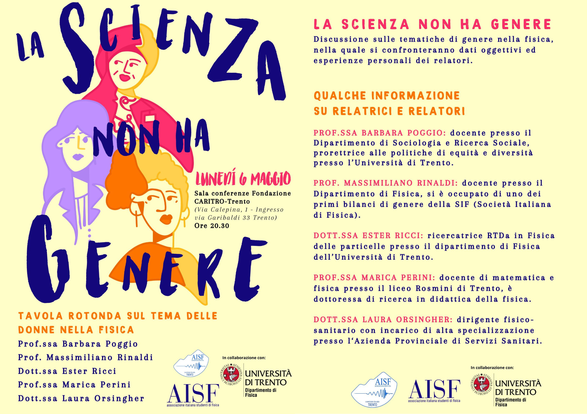
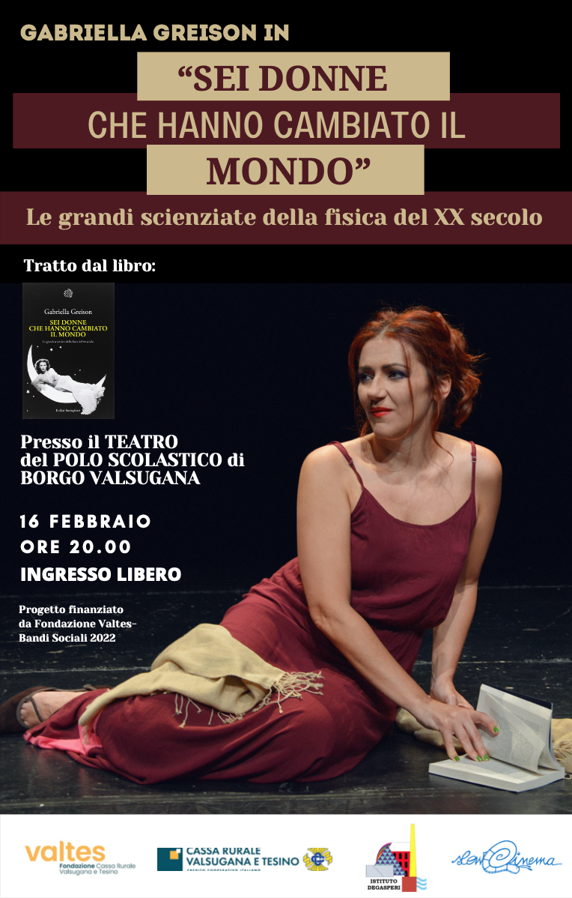

Part of the “Fuori dall’ombra 2025” initiative by the University of Trento.
For more info, visit UniTn News.
Group project on the Matilda effect in the fields of Physics and Mathematics,
presented on the 10th of April, 2025 with a talk at the inauguration of the red bench at the
Departments of Physics and Mathematics, to commemorate victims of gender-based violence.
The poster we created is currently exposed at the entrance hall of the Povo 0 building.

I was one of the main organizers of a roundtable on the state of women in Physics, held on 6th May, 2024. During the conference, professors and researchers discussed data from national and European reports on women in academic environments, as well as personal experiences that highlighted current issues on the way women are treated in academia. The event was in collaboration with the Department of Physics of the University of Trento and the Caritro Foundation, as part of a national initiative by AISF (Italian Association of Physics Students).
Thanks to a prize by Valtes Foundation won with two schoolmates, we had the opportunity to host and organize Gabriella Greison’s play “Sei donne che hanno cambiato il mondo”, on the history of overlooked women in STEM, at our high-school theatre, on 16th February 2023. The show was open to the community and reservations went sold out after only a week.
